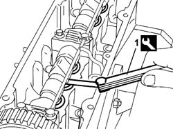

1036H14 valve tappets - check clearance
- Path
- Procedures > 10 ENGINE UNIT > 1036 TIMING SYSTEM > 1036H tappets and rocker shafts > 1036H14 valve tappets - check clearance
- Kind
- repair procedure (removal / refitting; the operation number is the code)
- Applies to
- engines: 1.1, 1.2 8v; all production periods
- Interactive page
- https://sloeber94.github.io/elrnDB-fPnd/en/#/2752469
Applies to: engines: 1.1; all production periods
1048A10 air cleaner filtering element - replace
5510C30 engine timing sensor - r+r
1016A20 single cam cover - r + r and replace gasket
1. Measure the clearance between the camshaft and the tappet shim using a feeler gauge.
Turn the camshaft and check the gap on all tappets.
 | Measurement | Value | |
|---|---|---|---|
- | Clearance with valve in closed position (mm) | Exhaust | 0.40 - 0.50 |
Intake | 0.30 - 0.40 | ||

Applies to: engines: 1.2 8v; all production periods
1048A10 air cleaner filtering element - replace
5510C30 engine timing sensor - r+r
1016A20 single cam cover - r + r and replace gasket
1. Measure the clearance between the camshaft and the tappet shim using a feeler gauge.
Turn the camshaft and check the gap on all tappets.
| Measurement | Value | |
|---|---|---|---|
- | Clearance with valve in closed position (mm) | Exhaust | 0.40 - 0.50 |
Intake | 0.30 - 0.40 | ||
Applies to: engines: 1.1; all production periods
1016A20 single cam cover - r + r and replace gasket
Applies to: engines: 1.2 8v; all production periods
1016A20 single cam cover - r + r and replace gasket
Topics linked from this page (3)
- 1016A20 single cam cover - r + r and replace gasket
- 1048A10 air cleaner filtering element - replace
- 5510C30 engine timing sensor - r+r